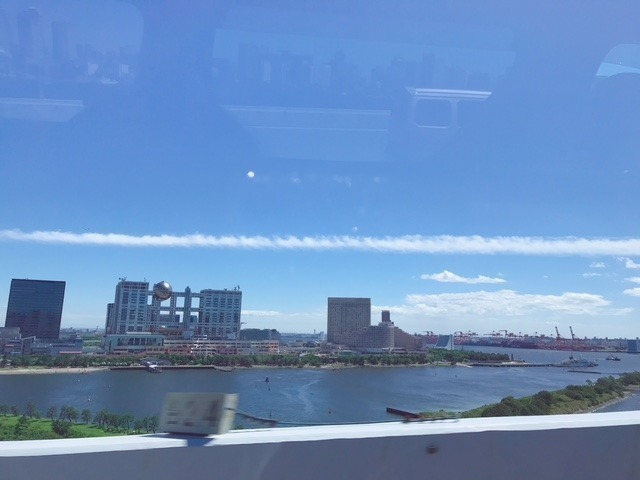
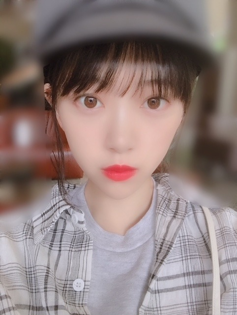
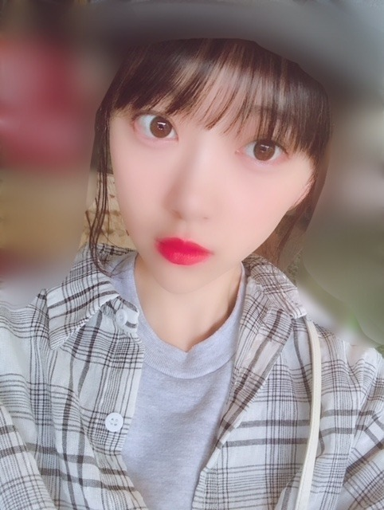

2018/0916Sun雲
雲の形をみるのが好きなのですが
秋って夏の雲をぼかしたような形だな〜って
思いながら最近は雲を見ています
きっと夏よりも柔らかく
優しいのが秋なんだと思う
秋は生まれ月っていうのもあるけど
胃にも優しいし目にも肌にも優しいので
個人的には大好きです

最近観た映画は
"SUNNY 強い気持ち・強い愛"と
"寝ても覚めても"
SUNNYは
たくさん泣いたし、笑ったし
キャストの皆さんが本当に個性豊かで
観て良かったです
友達に辛いことがあったとき、
自分のこと以上に辛く苦しくなる気持ちに
凄く共感しました
いつもそばにいてくれたからこそ
守りたいっていう思いが強くなる
寝ても覚めてもは
唐田えりかさんの
ナチュラルな関西弁に
ずっときゅんきゅんしてました
時間の流れがゆったりに感じつつも
起こっている出来事は衝撃の連続...
恋はその人だけのもので、特別で
だからいろんなドラマがあって
面白いんだなーと思いました
月に3本以上は観れてるけど
まだまだ時間が足りません。。
月に3本以上は観れてるけど
まだまだ時間が足りません。。
実は、SUNNYは絢音と観たんです
そのままオフを一緒に過ごしたんだけど
初期の頃行ってたご飯屋さんに行ったり
映画観たりお買い物したり
ずっとずっと話が尽きなくて
めっちゃ、楽しかったです
なんでも話せる上に
気も使わないし
笑いのツボも同じで
いつも支えられっぱなしだから
私もたまには絢音の支えになれたらいいな
ありがとう！
ありがとう！

diorの新作ルージュがお気に入り
風も食べ物も植物も服もメイクも
すっかり秋ですね
すっかり秋ですね

最近はラベンダー色の
ニットカーディガンを買いました
発売中の ar
9/21発売の platinum FLASH
よろしくお願いします！
挑戦や新しいことや試練や課題って
怖さもあるけど
でも絶対に絶対に
楽しいことだと思う
だって新たな景色や自分を
発見できる絶好な機会だもん
楽しいことは楽しむべき！
じゃね。
2018/09/16 15:06


コメント(420)
あっちの雲はアレに、そっちの雲はソレに見えるとか、よく妄想してたなぁ。
空を見なくなってから久しいです☆
いつも応援してます！！無理のない程度にブログ更新お願いしますっっ
いつも応援してます！！無理のない程度にブログ更新お願いしますっっ
おっしゃるように課題に挑戦、怖いところもあるけれど楽しいと思います。
痛みや辛さもあると思いますがそれを気にしていては一歩は踏み出せません。
なのでチャレンジには多少の困難はつきものなので気にせず、前に出て行ってくださいね。
また、その痛みが心を成長させるのだと思うのです。
久しぶりのブログありがとう
撮影など頑張って
ホントにえいがみ様だね‼
これからも身体に気を付けて頑張ってください。
応援してます‼
雲が只々流れてるところを見ると、何か心が落ち着くよね！
疲れすぎだなってときとか、焦りすぎだなってときは、雲を見て落ち着くようにしてる！
映画は今は「響」とか、「検察側の罪人」とかが、気になってる！
仕事帰りに行きたいんだけど、映画のスケジュールと合わない...
ここ最近、梅雨か！？ってぐらい雨が続いてて、低気圧が断続的に来てるだろうから、体調に気を付けてね！
最低、映画も観れていないから、そろそろ映画観に行きたいなぁと思っている今日この頃なんだ。
堀さんって凄く優しいんだなぁーってこのブログを見ていつも思います(^^)
明日死ぬと思い生きろ！永久に生きると思い学べ!
新しい事に挑戦する事は勇気がいるけど楽しんだもんの勝ちだから頑張って下さい
応援してます
雲、いいよね。(*´-`)
取り分け密度の濃い今を過ごしている未央奈からしたら特別に見えるのかなぁなんて思います。
秋の優しさですか。^ ^ 未央奈の秋好きな所を感じる感想だね〜。陽射しが落ち着いて目や肌に優しいのはよく分かるね！
…と同時に胃に優しい？？？笑 その発想は無かったよw夏の冷たい食べ物が終わって胃に優しいという事は言えるか。でも未央奈？食べ過ぎは注意だよ！
あ、でも秋の味覚はたくさん食べてね？？
予想でしかないけど、未央奈が最近体調崩しやすかった理由に少し心当たりがあります。未央奈がどうというより外的要因な気がするのです。
前向きでいる事は大正解だけど、自分に鞭打ってポジティブを演じることもあるんじゃないかな？
きっとそれは未央奈の活動には必要な事であり、またその姿に我々ファンが惹かれているのは間違いありません。未央奈に優しい言葉を伝える事は我々にも出来ますが、実際未央奈の体に優しく出来るのは未央奈だけですからね、ご自愛くださいませ。
さて！(*´꒳`*)相変わらずあやねちゃん好きだねw 嫉妬しちゃいます。ま、あやねちゃんだから許しますけどね笑(謎の上から目線w
その繋がり、もちろん大切で大事だけれども、あやねちゃん以外の子ともあやねちゃんと同じくらい仲良くしている姿も見たいな。どう？誰かにぶつかっていける？笑 飛鳥やみなみとか引きずって何処か遊びに行こうよw(*´-`)
あやねちゃんも一緒にさ！！
自分に関わる全ての物事はいつだってどの位でも変えられるもの。実は自分で正しい選択肢には気付くものです。後は自分次第なので恐れずに落ち着いて正しい選択を常に見極めて行きましょう！！
明るくて可愛いリップですね〜。(*´꒳`*)
未央奈、未央奈は元々綺麗なお顔してますよ！
そしてせっかく帽子未央奈なのに帽子にモザイクかかってしまうなんて！！(＞人＜;)んーざんねんw
私は帽子深くかぶるのが好きです♬もちろんブログ写真なら顔出すべきだし、いまのどのファッションも基本的に浅く被るのが一般的なのですが、深く被るの良くない？？なんかクールさが出るし。男は特に飾り気の少ないキャップを深く被るのが私はカッコイイと思います。
浅いのはポップでライトな雰囲気。深いのはクールでハードなイメージに感じます！(*´꒳`*)
私は未央奈の挑戦に関しては少しも心配していません。未央奈は挑戦は誰よりも出来る子だと思います。
試練や課題の時は、その華奢な体で耐えきれるのかちょっとだけ心配になります。
けれども未央奈の言う通りで間違いないよ！！(*´-`) 例えば転生でもしていて人生3回目の様な方は別だけど、普通人の人生なんて100年程度のもの。今そこに存在する奇跡を鑑みれば何事も貴重な奇跡の一つ。産まれた時間も場所も違う私の言葉が今未央奈に届く事も奇跡。ありとあらゆるものが奇跡。全てが奇跡なのだとしたら楽しめないはずがないでしょう！それは問題すらね！(*´꒳`*)
もしも楽しめない事が生まれたのならそれは己の問題です。己の問題は己の事なので全ての問題が自分次第で解決出来ます。何も恐れる事はありません！(*´-`)
ん。じゃね未央奈。体調はうまくコントロールしてね！体と心は密接に絡み合っているよ！！
いまから楽しみです(´∀`)
すごい綺麗な空‼︎
こんなにいい天気最近見た記憶がないです
さすが映画見様！いろいろ見てますね
月3本はすごいですよ
未央奈ちゃん、絢音ちゃんは相思相愛なんでしょうね
中々出会えることじゃないと思うので羨ましいです
少しやせましたか…？
もうご飯食べれてますよね？
食欲の秋‼︎美味しいものたくさん食べてください
素敵な写真いつもありがとうございます
じゃね。
秋は過ごしやすいんだけど
苦手な寒い冬が近づく季節なのが
ちょっとな(^^;
でもせっかくの秋だから
こないだ安納芋のタルト食べた！
お芋の部分がまるでカスタードみたいに
甘くてまろやかでコクがあって…
美味しゅうございました♪
堪能いたしましたm(__)m
みおなははっきりメイクでも
ナチュラルメイクでもかわいい！
でもまた細くなった～？？
体力はしっかり付けといてね！(^^)
秋は過ごしやすいですよね！
たくさん楽しんでくださいね！
いつも応援しています！
今日mステに出てなかったのでまだ完治してないということでしょうか。
ブログ更新ありがとう
もう秋になっちゃったね！
温度差で風邪ひかないように気をつけよう！！
俺も1週間続いた風邪がやっと治ってきたよ笑笑
みおなの誕生日まで1ヶ月切ったね☺️
握手会の時におめでとう言うね！！
次のブログも楽しみにしてます！！
ばいばーい
まだ歌えないの？大丈夫？痩せたね！ちゃんと栄養とってる？早く良くなるといいね(≧∇≦)
りょーへー(R.N.イナダウアーびーむ)だよ♪
今日は、夜勤バイトの日で、ちょうど向かってるところ！夜勤バイトの日って、時間感覚が不思議な感じになる！昼間に寝て、夜に出発して、深夜にバイトして、朝に帰ってきて、昼間に寝る、ってね！慣れたようで、実は慣れてないのかもしれない…！笑 まぁ、とにかく頑張ってくるよ！
明日もいい天気になるかなぁ？
#毎日コメント
#今日もお疲れ様
#今
#ちょっぴり眠いのが
#すごく不安。笑
#耐えねば
#バナナジュースって
#美味しいよね
#明日も楽しみおな♡
#おやすみおな(。-∀-)
自分も雲も秋も好きです！
未央奈ちゃんも大好き！
みおなの水墨画、良かったよ！
筆遣いが上手い(*･ω･)ﾉ
ブログありがとう❗️
僕も秋は生まれ月だよー
あと未央奈と誕生日５日違い❗️笑
５日は少し離れすぎか笑
でも僕はうれしいよー✨
もう秋らしくなったよね✨
秋のファッションがわからないから
男の人（僕は高校生です）のファッションとか
教えてほしいなぁ笑
体調に気をつけてね✊❗️
幕張の個握でお誕生日のお祝いしにくいよー
ゆうたんより
今日はMステ出なかったんだね、メールとか755も動いてなかったからちょっと心配。。催促してるわけじゃないよ！また体調が悪化してなければ良いけど…乃木坂に未央奈がいないとやっぱり寂しいよ。
元気で過ごしてることを願ってます！
待ってるよ〜
ふとした時に思い出す空模様は
いつの自分が見上げた空なんだろう
自分も知らなかった自分を発見できる機会は良き♪
自分を変えられるのは勇気ある一歩を踏み出せる自分自身なんだよね！
楽しいことは楽しまなきゃ勿体無い！
体調に気をつけて頑張ろう٩( 'ω' )و
「秋 来たな…。」って思う あってんのかな？ 気象に詳しくはありません。ひつじ雲も つい観てしまうセンチメンタル
元気になって良かった。
３連休でしたが、ガールズアードもMステもいなかったけど、大丈夫？ 季節の変わり目だから、余計心配ですが‥‥。
体調不良でお休みしてからも、まだすぐれないのかな？
絶対に無理しちゃダメですよ。
いざとなったら、なんでも託せる絢音ちゃんもいるし、この前甘えに行っていたかなりんにも甘えていいし、あわてず・焦らす、しっかり調えてくださいね。
今日から「NOGIBUNGO５」の再放送が始まりました。若～い。２期生を代表して、頑張ってました。なつかしいですね。
秋からは久しぶりに「１０」も始まるんですよね。楽しみにしたいと思います。
僕も雲を見るの好きで、なんだかふと見上げたくなるときがあります(o^^o)
夏の力強い入道雲も気持ちが高揚して好きですし、秋のおぼろげな雲は気分を落ち着かせてくれて好きです( ´ ▽ ` )
雲とか星とか虹とか、個人的に自然の産み出す景色とか現象って凄く好きです、堀ちゃんは他にも好きな景色とかありますかね？
それと秋の優しさっていうのも言われてみるとたしかに感じます。
厳しい冬の寒さまで、ゆっくりと季節を変えてくれる秋、春とはまた違った優しさだなぁとか考えてみたり(^^)笑
毎季節堀ちゃんのブログとかモバメを見ていて思いますが、堀ちゃんの四季の感じ方や表現の仕方って凄く素敵だなぁと思います(o^^o)
挑戦や試練は若いうちに、とよく聞きますが個人的には歳や経験を重ねても出来ることだと思います。
もちろん守るものが増えたりして挑戦しづらい雰囲気って感じてしまうのかもしれませんが、だからと言って挑戦できないと極端な決めつけはしたくないですね！
何かを守りながらできる挑戦って必ずありますし、自分ができる挑戦を判断しながら挑み続けていきたい( ´ ▽ ` )
「無謀な挑戦は挑戦とは言わない」とどこかで聞いたこともあります、それは若いうちだって同じことなはず(^^)
堀ちゃんはきっとこれからも挑戦し続けていくと思います、僕はそれを応援しながら自分の挑戦も続けていきます(o^^o)
さてさて、長くなってしまいましたが…
今回載せてくれてる写真も全部めっちゃ可愛いですねほんとに！( ´ ▽ ` )
この前の乃木中の堀ちゃんのめっちゃ可愛かったです〜、そのうえ気配りもできる(o^^o)笑
目が幸せです、ありがとうございます(^^)
またブログでの堀ちゃんの言葉も、お顔を見られる写真も、楽しみにしてます！
おやすみおなー！
Mステに居なかったので、根詰めて頑張ってる最中だったりするんでしょうか。もしそうだったとしたら、堀さんなら大丈夫なので出来るって信じてください。信じたり未来想像したり切り替えたり休んでみたりでなんとか頑張ってくださいね。応援してます。
ちゃんと休んでまた元気な姿見せてね！！
俺も秋が一番好きだな
あやねちゃんとはベストな仲だね！
まだこっちは少し暑くて少し日焼けしちゃった
気おつけてても学生時代は日焼けするもんなのかな
今日も頑張ってね！
おはよう！
仕事で海外かな？
扁桃腺の手術？
とか、考えたけど。
未央奈は未央奈だから。
お帰り と言える瞬間を楽しみにしてるね！
映画見様だねー
僕は、響見たよー
超おもしろかったよー
堀ちゃんの映画も見てみたいなー
プリン会大好きだよー
堀ちゃん、大好きだよー
ライブ、ガルアワ、Mステなど未央奈ちゃんがいないと張り合いがないし、とってもさみしい。
体調かお仕事の都合かわからないけど、未央奈ちゃんを応援する気持ちは変わりませんから。
上海に行くか迷ってる中で～す(笑)
乃木坂46と頑張ってるcuteでsmartな未央奈ちゃんを応援しています。
↑漢字これでいいのかな？笑
今日は、ディズニーランドに行く 最後までいる
未央奈、綺麗になったね‼
またね‼
乃木坂お命変えてもでも守る
ジブリファンの未央奈ちゃんなら、この表現で分かってもらえるかな？
(´ー｀)
＊ ＊ ＊ ＊ ＊ ＊
「40秒で支度しな！」
未央奈ちゃんはこのセリフ、何だか分かる？
『天空の城ラピュタ』の一場面
シータを助け出すため軍の要塞に一緒に連れて行って欲しいと言ったパズーに対してドーラが言った言葉です
40秒の身支度で、この先に続くパズーの冒険が始まる‥
俺がラピュタの中で一番大好きな場面であり、一番お気に入りのセリフです
(´ー｀)
＊ ＊ ＊ ＊ ＊ ＊
「僕たち人間は、自分で自分を決定する力を、持っているのだから」
これは絢音ちゃんのお薦めの本、『君たちはどう生きるべきか』の中のお気に入りの言葉
俺は漫画版を読んだのですか、未央奈ちゃんはもう読みましたか？
読書好きの絢音ちゃんが薦めるだけあって、とても素晴らしい本でしたよ
(´ー｀)
未央奈ちゃんのこれからも続くであろう様々な挑戦が、良い結果に結びついていくことを願って
ディズニーのマーベルスタジオ作品とか２０作品もあって、マーベルドラマと、繋がって女性が主人公だったりするから興味深いよ？(＾O)＝3
全世界の歴代映画ランキングでベスト１０に４作品もランクインしてるし、トップの４位に入ってるアベンジャーズ・インフィニティウォーはドラマチック過ぎるから見応えあります・・・ ＼＾o＾／
また今週も頑張って行きましょうー・・・m(__)m
未央奈更新ありがとう！
体調は大丈夫？
無理しないでね
GirlsAwardもMステもいなくて悲しかった
未央奈がいない乃木坂は考えられないなって思ったよ(;_;)
またブログ待ってるね！
ってか未央奈からファッション教わりたい笑
どーやったらそんなにうまくまとめられるの〜
いつも応援してます！
コメントする